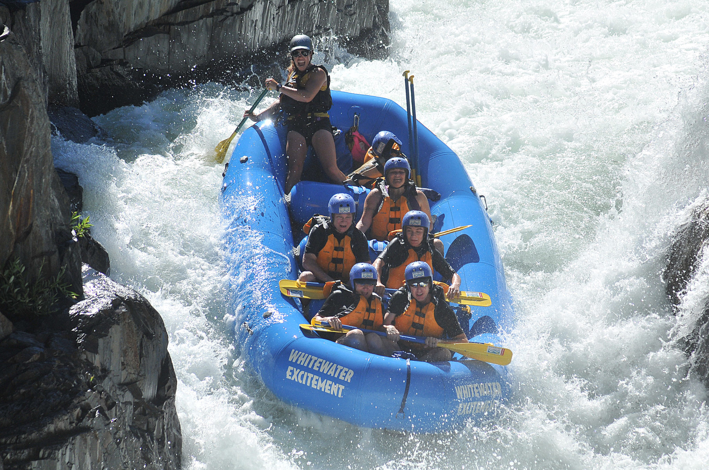
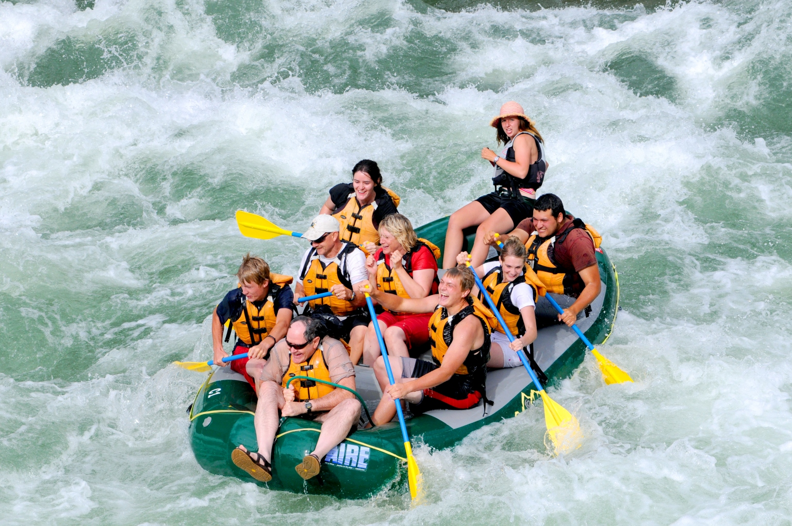

The River Rush
Experience the thrill of the rapids on this full-day adventure down the River Rush. This trip is perfect for adrenaline junkies, featuring class IV and V rapids, stunning waterfalls, and a riverside lunch. Expert guides ensure your safety while providing an exhilarating experience.

Calm Waters
Ideal for families and those new to rafting, the Calm Waters trip offers a gentle introduction to the sport. Enjoy a leisurely paddle down the serene river, with plenty of opportunities to swim, wildlife watch, and soak up the sun. A riverside picnic lunch adds to the idyllic day on the water.